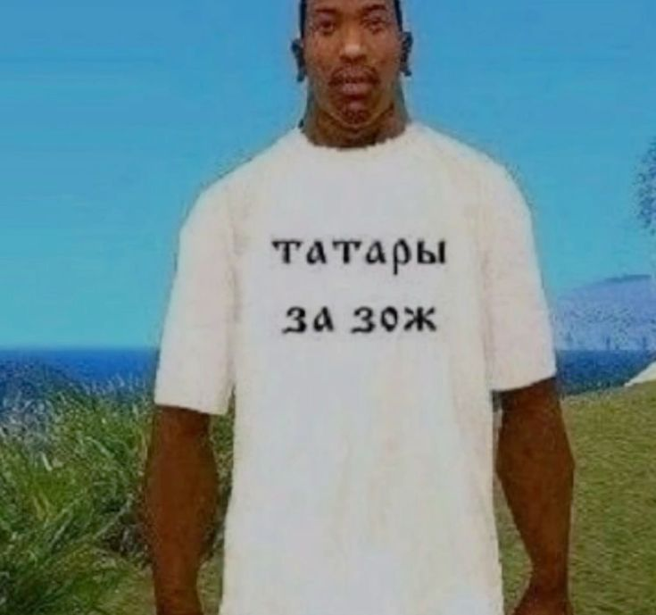
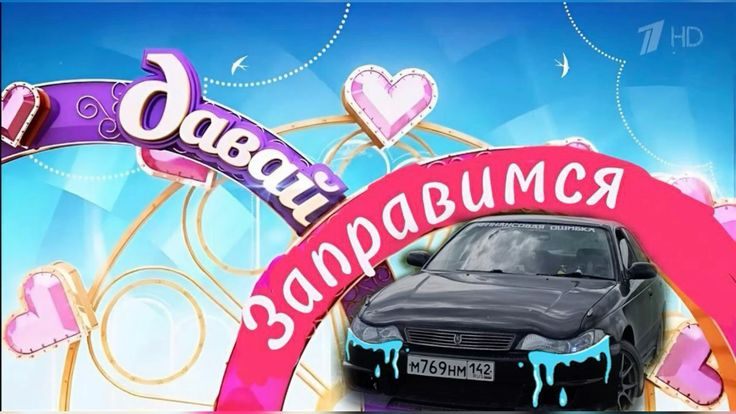
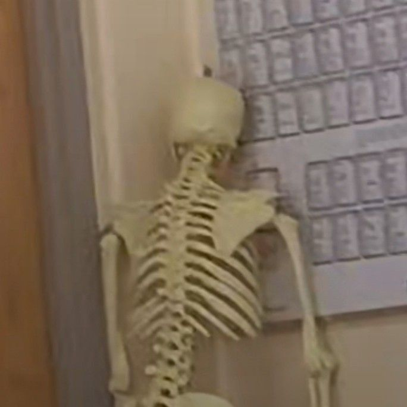

Дорогая, Сабрина*!
*она же староста Дыленок, подставка для деда, саня опер
Я решила, что нам очень не хватает физической активности в жизни
Поэтому теперь мы будем бегать по утрам и делать силовые тренировки))
Если на данный момент тебе всё ещё не нравится эта идея,
то у меня есть аргументы!!!!

Вот мои аргументы:
1. Здоровый образ жизни даёт красивую фигуру,
а значит и возможность ходить в топах и коротких шортах
Также убирается ачивка "Колбаса вязанка",
получаемая на пляже, в купальнике с завязками
а значит и возможность ходить в топах и коротких шортах
Также убирается ачивка "Колбаса вязанка",
получаемая на пляже, в купальнике с завязками
2. После тренировки можно пойти ко мне смотреть Тачки и пить пиво
3. Можно выкладывать в запрещённые социальные сети истории с пробежек,
чтобы Артём знал, кого он потерял
чтобы Артём знал, кого он потерял
4. Чтобы наработать хорошую физическую форму и
в конце года отрабатывать пропуски на физре в КФУ и Севгу
в конце года отрабатывать пропуски на физре в КФУ и Севгу
5. Чтобы тогда, когда все будут стоять за бензином в очередях,
мы могли пешком дойти до Геленджика и обратно
мы могли пешком дойти до Геленджика и обратно

6. Ну пожалуйста 🙏

Помни, что твой отказ будет иметь последствия.
Потому что я могу прийти к тебе домой и играть в твой компьютер.
Что тебе нужно знать:
- 📅 Когда: каждый день в 8:00
- 📍 Где: Набережная на Воровского
- 🎯 Сколько: 5 км (или пока пятки не отвалятся)
- ☕ После: зайти в МерриБерри за кофе